デバイス紹介
2024年3月現在、使用しているサーバー、PCを紹介します。テキトーに記事作ってるので間違ってるかもしれませんが。
サーバー・PC
サーバー
1号機
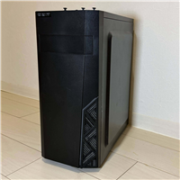 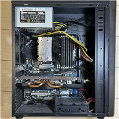スペック
- CPU：Intel Xeon W3530
- メモリ:DDR3 18GB
- OS：Proxmox VE 8.1
- ストレージ：SATA SSD 512GB
- ネットワーク：1000BASE-T(LAN)
2号機
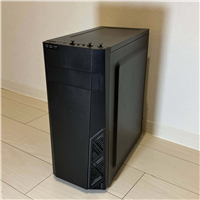 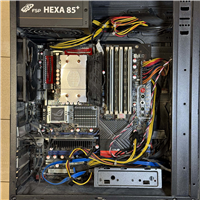スペック
- CPU：Intel Core i7-950
- メモリ:DDR3 27GB
- OS：Proxmox VE 8.1
- ストレージ：SATA SSD 512GB
- ネットワーク：1000BASE-T(LAN)x2
4号機
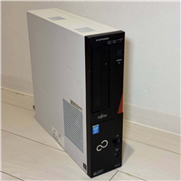 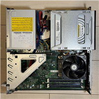スペック
- CPU：Intel Core i7-4770
- メモリ:DDR3 16GB
- OS：Proxmox VE 8.1
- ストレージ：SATA SSD 120GB
- ネットワーク：1000BASE-T(LAN)
6号機
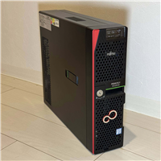 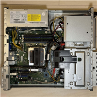スペック
- CPU：Intel Xeon E3-1220 v6
- メモリ:DDR3 32GB
- OS：Proxmox VE 8.1
- ストレージ：SATA SSD 512GB x2（RAID1 512GB）
- ネットワーク：10GBASE-T(SFP+)x2
7号機
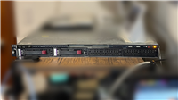 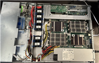スペック
- CPU：Intel Xeon X5670 x2
- メモリ:Registered DDR3 122GB
- OS：Proxmox VE 8.1
- ストレージ：SATA HDD 2TB
- ネットワーク：1000BASE-T(LAN)x2
あれ、3号機と5号機どこいった？って思いましたね？
3号機と5号機は元々あったのですが、色々あって外した結果、間を詰めずにそこだけ空きました。ただそれだけ
ちなみに7号機は見ての通りラックサーバーなのですが、うるさくて止めてます。スペックこそ最高なので、勿体ない...
メインPC
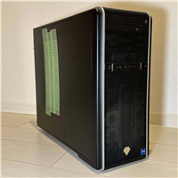 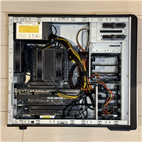2023年4月にツクモにて購入。自作とBTOで悩んだ末、結局BTOにした。
スペックに関しては申し分ないが、SSD２枚とも残り30GB程度しか残ってないので大容量のM.2SSDでも増設しいな～なんて考えている。
あとメモリも96GBでは半端なので、128GB（32GB x4）に増設する予定。
横の緑色のガムテープは側面にホコリがつくのを防止するためのもの。
スペック
- CPU：Intel Core i7-13700F
- GPU：NVIDIA GeForce RTX 4070
- メモリ：DDR4-3200 96GB（32GBx2、16GBx2）
- OS：Windows 10 Home
- ストレージ：M.2 SSD 1TB , SATA SSD 1TB , SATA HDD 8TB
- ネットワーク：10GBASE-T(SFP+)x2 , 2.5GBASE-T(LAN) , Wi-Fi
- その他：光学ドライブ
サブPC
Lenovo Legion Slim 750i
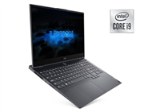2021年8月に購入。
前のノートPCが壊れてしまい、新しいPCを購入。
久々のゲーミングノートで、その薄さと軽さに驚いた。
ただ、所詮ゲーミングノートなので普通のノートPCより重く、あまり屋外で使うことはなかった。
写真：Lenovo公式サイトより
スペック
- CPU：Intel Core i7-10750H
- GPU：GeForce RTX 2060 Max-Q Design
- メモリ：DDR4 2933MHz 16GB
- OS：Windows 10 Home
- ディスプレイ：15.6" IPS ノングレア 1920x1080 144Hz
- ストレージ：M.2 SSD 1TB
- 重量：1.9kg
- その他：指紋認証
HP ENVY 13-aq1005tu
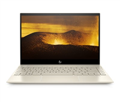2020年3月に購入。コンパクトで軽く、よく旅行に持っていった。
値段の割には性能がまずまずだったので少し後悔していた。
その後、1年ちょい使っていたら色々あって壊された。
ディスプレイを逆向きに曲げられヒンジがぐにゃぐにゃになってしまったため、
一時期ガムテープを巻いて使っていたが、画面がつかなくなって捨てた。
写真：Amazon販売ページより
スペック
- CPU：Intel Core i5-10210U
- GPU：Intel UHD Graphics
- メモリ：DDR4 8GB
- OS：Windows 10 Home
- ストレージ：SSD M.2 512GB
- 重量：1.3kg
- その他：指紋認証
引退したサーバー・PC
引退したサーバー
Dynabook T451 34EB
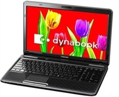2021年5月購入。ハードオフで3千円で購入した。
人生初のサーバー運用機だったが、スペックがカス過ぎてまともに使えなかった。
バッテリーとディスプレイが壊れ、今はProxmox VEのWeb管理UIにリモート接続するためのPCになっている。
写真：Amazon販売ページより
スペック
- CPU：Intel Celeron B815
- GPU：Intel HD Graphics
- メモリ：16GB
- OS：Ubuntu Server 20.04 LTS※
- ディスプレイ：15,6" グレア 1366x768
- ストレージ：SATA HDD 500GB
- 重量：2.4kg
- その他：DVDドライブ
引退したPC
メインPC
MSI Trident X
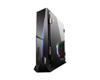2019年2月に購入。当時最高スペックのPCで、拡張性以外はとっても良いPCだった。
それなりに荒く使っていた（プラグ抜いて電源断やオーバークロックなど）が、
普通に使えていたので思ったより頑丈で良かった。
４年使って、家族に譲った。
写真：MSI公式サイトより
スペック
- CPU：Intel Core i9-9900K
- GPU：GeForce RTX 2080
- メモリ：DDR4 2666MHz 32GB
- OS：Windows 10 Home
- ストレージ：M.2 SSD 512GB , mSATA SSD 1TB , SATA HDD 2TB
- 重量：9.2kg
MSI GT62VR 7re Dominator Pro
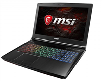2017年3月?頃に購入。前使ってたAlienware(下記を参照)がVR非対応ということでこちらを購入。
GTX1070搭載していて当時はかなりの高スペックだった覚えがある。
重量が3kg近くあるのに、これを持って友人の家に行っていたのは当時の私元気すぎないか......
このPCを捨ててからしばらくゲーミングノートは使っていなかったので、
Lenovo Legion購入したときは軽さとコンパクトさにかなり驚いた。
写真：MSI公式サイトより
スペック
- CPU：Intel Core i7-7700HQ
- GPU：GeForce GTX 1070
- メモリ：DDR4 2400MHz 16GB
- OS：Windows 10 Home
- ディスプレイ：15.6" IPS ノングレア 1980x1080
- ストレージ：M.2 SSD 256GB , SATA HDD 1TB
- 重量：3.0kg
DELL ALIENWARE 15 R1

2015年?購入。初のゲーミングPCを買ってもらった。
6年前の事なのでほとんど覚えてないが、宇宙上最も最強のゲーミングPCなどと謳っていた記憶だけある。
3モデルあり、最高モデルがGTX980Mで最強PCだったなんて今では想像がつかない。
今同じスペックで購入したらいくらになるのかとても気になる。
写真：dell公式サイトより
スペック
- CPU：Intel Core i7-4720HQ
- GPU：GeForce GTX 970M
- メモリ：DDR3L 1600MHz 8GB
- OS：Windows 8.1
- ディスプレイ：15.6" IPS ノングレア 1920x1080
- ストレージ：M.2 SSD 128GB , SATA HDD 1TB
- 重量：3.2kg
この記事作成時にネットで調べて、3モデル中2つ目のスペックのを記載しています。
何使っていたかは全く覚えてないです。
Lenovo IdeaPad Yoga 13

2013年?購入。これが初の自分のPCだった。このPCにはかなりお世話になった。
詳しくは覚えていないが、PCでマイクラをやりたかったために購入した覚えがある。（当時ver1.5.x）
初期OSがWin 8で、使い始めたのもWin 8だったので使いづらいとは思わなかった（はず）。
Alienwareに買い替えて使わなくなり、2019年頃に久しぶりに出してみたら起動しなかった。悲しい。
写真：Lenovo公式サイトより
スペック
- CPU：Intel Core i7-3537U
- GPU：Intel HD Graphics 4000
- メモリ：DDR3 1600MHz 8GB
- OS：Windows 8
- ディスプレイ：13.3" グレア 1600x900 360度回転
- ストレージ：SSD 128GB（他不明）
- 重量：1.5kg